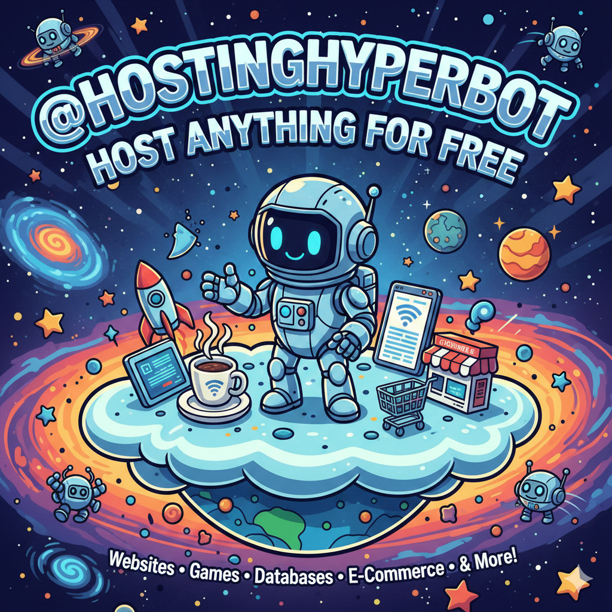

Host Your Vision for Free: A Deep Dive into @HostingHyperBot
In the modern development landscape, the transition from a local "Hello World" to a live, 24/7 application often hits a significant wall: hosting costs. For students, hobbyists, and independent developers, paying $5–$10 a month just to keep a simple Telegram bot or a Flask portfolio online is a barrier to innovation.
Enter @HostingHyperBot, a revolutionary Telegram-based hosting solution designed to eliminate the friction of server management. Imagine deploying a full-stack Python application or a static website directly from your chat interface—no credit cards, no complex SSH keys, and no monthly invoices.
1. What is @HostingHyperBot?
@HostingHyperBot is an all-in-one Telegram bot that acts as a PaaS (Platform as a Service). It allows users to upload their code files—ranging from simple HTML/CSS static sites to complex Python scripts using Flask or Django—and hosts them on its backend infrastructure for free.
The Innovation: By leveraging the Telegram API as a control panel, it removes the need for a web-based dashboard, allowing you to restart, update, and monitor your apps while on the move via your smartphone.
2. Why You Should Use It: Key Benefits
- Zero Cost Entry: Perfect for testing MVPs (Minimum Viable Products) or hosting personal utility bots without financial risk.
- Versatile Stack: Unlike some "static-only" hosts, HyperBot supports Python (Flask/FastAPI), making it ideal for backend APIs and automated scripts.
- Instant Discord/Telegram Bot Deployment: Specifically optimized for bot developers. It handles the persistent connection required to keep your bot "Always Online."
- Websocket & Static Support: You can host landing pages, portfolios, or even small real-time web apps.
3. The Pros of Bot-Based Hosting
| Feature | Benefit |
|---|---|
| Accessibility | Manage your server from any device with Telegram installed. |
| Setup Speed | Deploy by simply uploading a .zip or .py file. |
| Uptime | 24/7 persistent hosting (unlike local tunneling like Ngrok). |
| Log Access | Get real-time error logs sent directly to your chat. |
4. Similar Services: The Pella.app Connection
If you’ve heard of Pella.app, you already understand the power of simplified hosting. Like @HostingHyperBot, Pella offers a streamlined experience for hosting Telegram and Discord bots with a high focus on reliability.
The Minecraft Factor: While @HostingHyperBot is the go-to for lightweight scripts and web apps, Pella.app takes it a step further by offering specialized Minecraft Server hosting. If your project requires heavy resource allocation for gaming, Pella is an excellent sister-service to keep in your toolkit. Both platforms share the same philosophy: Making the internet accessible to everyone, regardless of their budget.
5. How to Deploy in 60 Seconds
- Step 1: Search for @HostingHyperBot on Telegram and hit
/start. - Step 2: Choose your project type (Static Website, Python App, or Bot).
- Step 3: Upload your
main.pyor your website folder. - Step 4: Click Deploy and receive your live URL instantly.